<html xmlns:v="urn:schemas-microsoft-com:vml"
xmlns:o="urn:schemas-microsoft-com:office:office"
xmlns="http://www.w3.org/TR/REC-html40">

<head>
<meta http-equiv=Content-Type content="text/html; charset=gb2312">
<meta name=ProgId content=FrontPage.Editor.Document>
<link rel=Edit-Time-Data href="isocube.files/editdata.mso">
<title>Panorama Transformation Software 1.0</title>
<!--[if gte mso 9]><xml>
 <o:DocumentProperties>
  <o:Author></o:Author>
  <o:Template>Normal</o:Template>
  <o:LastAuthor>lwan</o:LastAuthor>
  <o:Revision>81</o:Revision>
  <o:TotalTime>59</o:TotalTime>
  <o:Created>2007-02-27T15:24:00Z</o:Created>
  <o:LastSaved>2007-02-27T16:28:00Z</o:LastSaved>
  <o:Pages>1</o:Pages>
  <o:Words>588</o:Words>
  <o:Characters>3356</o:Characters>
  <o:Company>CUHK</o:Company>
  <o:Lines>27</o:Lines>
  <o:Paragraphs>7</o:Paragraphs>
  <o:CharactersWithSpaces>3937</o:CharactersWithSpaces>
  <o:Version>11.6568</o:Version>
 </o:DocumentProperties>
</xml><![endif]--><!--[if gte mso 9]><xml>
 <w:WordDocument>
  <w:ValidateAgainstSchemas/>
  <w:SaveIfXMLInvalid>false</w:SaveIfXMLInvalid>
  <w:IgnoreMixedContent>false</w:IgnoreMixedContent>
  <w:AlwaysShowPlaceholderText>false</w:AlwaysShowPlaceholderText>
  <w:Compatibility>
   <w:UseFELayout/>
  </w:Compatibility>
  <w:BrowserLevel>MicrosoftInternetExplorer4</w:BrowserLevel>
 </w:WordDocument>
</xml><![endif]--><!--[if gte mso 9]><xml>
 <w:LatentStyles DefLockedState="false" LatentStyleCount="156">
 </w:LatentStyles>
</xml><![endif]-->
<style>
<!--
 /* Font Definitions */
 @font-face
	{font-family:宋体;
	panose-1:2 1 6 0 3 1 1 1 1 1;
	mso-font-alt:SimSun;
	mso-font-charset:134;
	mso-generic-font-family:auto;
	mso-font-pitch:variable;
	mso-font-signature:3 135135232 16 0 262145 0;}
@font-face
	{font-family:"\@宋体";
	panose-1:2 1 6 0 3 1 1 1 1 1;
	mso-font-charset:134;
	mso-generic-font-family:auto;
	mso-font-pitch:variable;
	mso-font-signature:3 135135232 16 0 262145 0;}
 /* Style Definitions */
 p.MsoNormal, li.MsoNormal, div.MsoNormal
	{mso-style-parent:"";
	margin-bottom:.0001pt;
	mso-pagination:widow-orphan;
	font-size:12.0pt;
	font-family:宋体;
	mso-bidi-font-family:宋体; margin-left:0cm; margin-right:0cm; margin-top:0cm}
h2
	{mso-margin-top-alt:auto;
	margin-right:0cm;
	mso-margin-bottom-alt:auto;
	margin-left:0cm;
	mso-pagination:widow-orphan;
	mso-outline-level:2;
	font-size:18.0pt;
	font-family:宋体;
	mso-bidi-font-family:宋体;
	font-weight:bold;}
h3
	{mso-margin-top-alt:auto;
	margin-right:0cm;
	mso-margin-bottom-alt:auto;
	margin-left:0cm;
	mso-pagination:widow-orphan;
	mso-outline-level:3;
	font-size:13.5pt;
	font-family:宋体;
	mso-bidi-font-family:宋体;
	font-weight:bold;}
a:link, span.MsoHyperlink
	{color:blue;
	text-decoration:underline;
	text-underline:single;}
a:visited, span.MsoHyperlinkFollowed
	{color:blue;
	text-decoration:underline;
	text-underline:single;}
p
	{mso-margin-top-alt:auto;
	margin-right:0cm;
	mso-margin-bottom-alt:auto;
	margin-left:0cm;
	mso-pagination:widow-orphan;
	font-size:12.0pt;
	font-family:宋体;
	mso-bidi-font-family:宋体;}
@page Section1
	{size:595.3pt 841.9pt;
	margin:72.0pt 90.0pt 72.0pt 90.0pt;
	mso-header-margin:42.55pt;
	mso-footer-margin:49.6pt;
	mso-paper-source:0;}
div.Section1
	{page:Section1;}
 /* List Definitions */
 @list l0
	{mso-list-id:19090915;
	mso-list-template-ids:1853007460;}
@list l0:level1
	{mso-level-number-format:bullet;
	mso-level-text:\F0B7;
	mso-level-tab-stop:36.0pt;
	mso-level-number-position:left;
	text-indent:-18.0pt;
	mso-ansi-font-size:10.0pt;
	font-family:Symbol;}
@list l1
	{mso-list-id:568736204;
	mso-list-template-ids:-320806540;}
@list l1:level1
	{mso-level-number-format:bullet;
	mso-level-text:\F0B7;
	mso-level-tab-stop:36.0pt;
	mso-level-number-position:left;
	text-indent:-18.0pt;
	mso-ansi-font-size:10.0pt;
	font-family:Symbol;}
@list l1:level2
	{mso-level-tab-stop:72.0pt;
	mso-level-number-position:left;
	text-indent:-18.0pt;}
@list l1:level3
	{mso-level-tab-stop:108.0pt;
	mso-level-number-position:left;
	text-indent:-18.0pt;}
@list l1:level4
	{mso-level-tab-stop:144.0pt;
	mso-level-number-position:left;
	text-indent:-18.0pt;}
@list l1:level5
	{mso-level-tab-stop:180.0pt;
	mso-level-number-position:left;
	text-indent:-18.0pt;}
@list l1:level6
	{mso-level-tab-stop:216.0pt;
	mso-level-number-position:left;
	text-indent:-18.0pt;}
@list l1:level7
	{mso-level-tab-stop:252.0pt;
	mso-level-number-position:left;
	text-indent:-18.0pt;}
@list l1:level8
	{mso-level-tab-stop:288.0pt;
	mso-level-number-position:left;
	text-indent:-18.0pt;}
@list l1:level9
	{mso-level-tab-stop:324.0pt;
	mso-level-number-position:left;
	text-indent:-18.0pt;}
ol
	{margin-bottom:0cm;}
ul
	{margin-bottom:0cm;}
-->
</style>
<!--[if gte mso 10]>
<style>
 /* Style Definitions */
 table.MsoNormalTable
	{mso-style-name:普通表格;
	mso-tstyle-rowband-size:0;
	mso-tstyle-colband-size:0;
	mso-style-noshow:yes;
	mso-style-parent:"";
	mso-padding-alt:0cm 5.4pt 0cm 5.4pt;
	mso-para-margin:0cm;
	mso-para-margin-bottom:.0001pt;
	mso-pagination:widow-orphan;
	font-size:10.0pt;
	font-family:"Times New Roman";
	mso-ansi-language:#0400;
	mso-fareast-language:#0400;
	mso-bidi-language:#0400}
</style>
<![endif]--><!--[if gte mso 9]><xml>
 <o:shapelayout v:ext="edit">
  <o:idmap v:ext="edit" data="1"/>
 </o:shapelayout></xml><![endif]-->
</head>

<body lang=ZH-CN link=#0000FF vlink=#0000FF style='tab-interval:21.0pt' bgcolor="#FFFFFF">

<div class=Section1>

<blockquote style='margin-top:5.0pt;margin-bottom:5.0pt'>

<div align=center>

<br>
　<table class=MsoNormalTable border=0 cellspacing=3 cellpadding=0
 style='mso-cellspacing:1.5pt;mso-padding-alt:0cm 5.4pt 0cm 5.4pt' width="758">
 <tr style='mso-yfti-irow:0;mso-yfti-firstrow:yes;mso-yfti-lastrow:yes'>
  <td style='width:380;padding:.75pt'>
  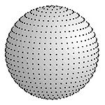</td>
  <td style='width:1305;padding:.75pt'>
  <h2 align=center style='text-align:center'>
	<span lang=EN-US style='font-family:
  "Verdana"; font-weight:400'><font style="font-size: 28pt">Panorama <br>
    Transformation 1.0</font></span></h2>
  <p class=MsoNormal align=center style='text-align:center'>
	<span style="font-family: Verdana; font-size: 11pt" lang="en-us">Designed 
	and developed by</span></p>
	<p class=MsoNormal align=center style='text-align:center'>
	<span lang=EN-US
  style='font-family:"Verdana"'>
    <a
  href="http://www.cse.cuhk.edu.hk/~lwan" style="color: blue; text-decoration: underline; text-underline: single"><font style="font-size: 11pt">Liang 
	Wan</font></a><font style="font-size: 11pt">, 
    <a
  href="/myself.html" style="color: blue; text-decoration: underline; text-underline: single">Tien-Tsin Wong</a>,
	<a
  href="http://www.ee.cityu.edu.hk/~csleung/" style="color: blue; text-decoration: underline; text-underline: single">Chi-Sing Leung</a>, <br>
  	<a href="http://www3.ntu.edu.sg/home/cwfu/" style="color: blue; text-decoration: underline; text-underline: single">Chi-Wing Fu</a>, and Tze-Yiu Ho</font></span></p>
  </td>
  <td style='width:401;padding:.75pt'>
  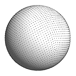</td>
 </tr>
</table>

</div>

<div>

<h3><span lang="en-us" style="font-family: Verdana; font-weight: 400"><o:p>
<font size="5">Introduction</font></o:p></span></h3>

<p class="MsoNormal" style="margin-left: 36.0pt" align="justify">
<font style="font-size: 11pt" face="Verdana">Cubemap is a de<span lang="en-us">
</span>facto standard for 
representing the  360-degree <span lang="en-us">surrounding </span>environment (a spherical function) in 
many graphics applications. However, it does not evenly sample the environment. 
Different texels may span different solid angles<span lang="en-us">, in other 
words, </span>different importances or 
weights. We&nbsp; explore novel parameterizations of sphere that can 
sample <span lang="en-us">the </span>environment more evenly. During the past few years, we have investigated 
and developed four spherical maps with equal or near-equal solid angle property. 
The source code here demonstrates the implementation of <b>isocube</b>, <b>
unicube</b>, <b>rhombic dodecahedron</b> and <b>healpix</b> spheircal maps. 
Meanwhile, we provide a prototype software&nbsp; that converts the environment 
map <span lang="en-us">among</span> four spherical maps and <span lang="en-us">
other popular sphere</span> maps, including <b>cubemap</b>,
<b>longitude-latitude map</b>, <b>mirror-ball</b>, <b>mirror-ball closeup</b>, 
and <b>light probe</b>. If you are interested, you can download the code below. 
The code is <span lang="en-us">completely </span>free of charge<span lang="en-us"> 
(both commercial and academic)</span>. Please refer to the file LICENSE.TXT for copyright 
issues. </font></p>

<h3><span lang="en-us"><font size="5">
<span style="font-family: Verdana; font-weight: 400">Instructions for Usage</span></font></span></h3>

<ul type=disc>
 <li class=MsoNormal style='mso-margin-top-alt:auto;mso-margin-bottom-alt:auto;
     mso-list:l1 level1 lfo3;tab-stops:list 36.0pt'>
	<span style="font-family: Verdana; font-size: 11pt; font-weight: 700">
    Download<span lang="en-us">&nbsp; (Current version </span>
    <a href="panotransform-src-1.0.zip"><font face="Courier New">
	<span style="font-weight: 700">
    panotransform 1.0</span></font></a><span style="font-family: Verdana; font-size: 11pt; font-weight: 700">, 
    released on 1 March 2010)</span></span></li>
</ul>

<blockquote>


</blockquote>

<ul type=disc>
	<li class=MsoNormal style='mso-margin-top-alt:auto;mso-margin-bottom-alt:auto;
     mso-list:l1 level1 lfo3;tab-stops:list 36.0pt'>
	<p align="justify">
	<span style="font-family: Verdana; font-size: 11pt" lang="en-us">Method 1: 
	Use the mapping functions <br>
	<br>
	Each spherical map is provided with two functions. Suppose a pixel in a 
	given spherical map is represented by the local coordinates (facenum, ix, iy). 
	The function &quot;xxx_pix2ang&quot; maps the pixel from local coodinates of the 2D 
	spherical map to spherical coordinates (theta, phi). The other function 
	&quot;xxx_ang2pix&quot; maps one pixel from spherical coordinates to local coordinates 
	of the 2D spherical map. The followings shows the two functions for &quot;rhombic 
	dodecahedron map&quot;:<br>
	<br>
	void rd_pix2ang(long nside, int facenum, double ix, double iy, double 
	*theta, double *phi);<br>
	<br>
	void rd_ang2pix(long nside, double theta, double phi, int *facenum, double 
	*ix, double *iy);<br>
　</span></li>
	<li class=MsoNormal style='mso-margin-top-alt:auto;mso-margin-bottom-alt:auto;
     mso-list:l1 level1 lfo3;tab-stops:list 36.0pt'>
	<span style="font-family: Verdana; font-size: 11pt" lang="en-us">Method 2: 
	Use the executable <br>
	To compile the source code, you need Visual Studio .NET 2003. The usage of 
	the executable is as follows:</span></li>
</ul>
<blockquote>
	<blockquote>
		<div style="border:1px solid; PADDING-BOTTOM: 1px; PADDING-LEFT: 4px; PADDING-RIGHT: 4px; PADDING-TOP: 1px; width:601; height:670">
			<font face="Times New Roman" style="font-size: 10pt"><b>Usage:&nbsp;</b>&nbsp; <br>
			</font><font face="Courier New" size="2">&nbsp; 
			panotransform.exe /it [ppm/pfm/tga] <br>
			&nbsp;&nbsp;&nbsp;&nbsp;&nbsp;&nbsp;&nbsp;&nbsp;&nbsp;&nbsp;&nbsp;&nbsp;&nbsp;&nbsp;&nbsp;&nbsp;&nbsp;&nbsp;&nbsp; /if [c/cv/u/uv/i/iv/h/rd/p/b/m/r]<br>
			&nbsp;&nbsp;&nbsp;&nbsp;&nbsp;&nbsp;&nbsp;&nbsp;&nbsp;&nbsp;&nbsp;&nbsp;&nbsp;&nbsp;&nbsp;&nbsp;&nbsp;&nbsp;&nbsp; /ot [ppm/pfm/tga]<br>
			&nbsp;&nbsp;&nbsp;&nbsp;&nbsp;&nbsp;&nbsp;&nbsp;&nbsp;&nbsp;&nbsp;&nbsp;&nbsp;&nbsp;&nbsp;&nbsp;&nbsp;&nbsp;&nbsp; /of [c/cv/u/uv/i/iv/h/rd/p]<br>
			&nbsp;&nbsp;&nbsp;&nbsp;&nbsp;&nbsp;&nbsp;&nbsp;&nbsp;&nbsp;&nbsp;&nbsp;&nbsp;&nbsp;&nbsp;&nbsp;&nbsp;&nbsp;&nbsp; /s size OR /w width /h height<br>
			&nbsp;&nbsp;&nbsp;&nbsp;&nbsp;&nbsp;&nbsp;&nbsp;&nbsp;&nbsp;&nbsp;&nbsp;&nbsp;&nbsp;&nbsp;&nbsp;&nbsp;&nbsp;&nbsp; /i image1 [/x xrot1 /y yrot1 /z zrot1 /a 
			weight1]<br>
			&nbsp;&nbsp;&nbsp;&nbsp;&nbsp;&nbsp;&nbsp;&nbsp;&nbsp;&nbsp;&nbsp;&nbsp;&nbsp;&nbsp;&nbsp;&nbsp;&nbsp;&nbsp;&nbsp; /i image2 [/x xrot2 /y yrot2 /z zrot2 /a 
			weight2]<br>
			</font><font face="Courier New" style="font-size: 10pt">&nbsp;&nbsp;&nbsp;&nbsp;&nbsp;&nbsp;&nbsp;&nbsp;&nbsp;&nbsp;&nbsp;&nbsp;&nbsp;&nbsp;&nbsp;&nbsp;&nbsp;&nbsp;&nbsp; ...<br>
			</font>
            <font face="Times New Roman" style="font-size: 10pt; font-weight:700">
			Parameters:</font><font face="Courier New" style="font-size: 10pt"><br>
			</font><font face="Courier New" size="2">&nbsp; #<span lang="en-us">I/O 
            options:</span><br>
            <span lang="en-us">&nbsp;&nbsp;&nbsp; /it : input file format&nbsp; 
            [ppm/pfm/tga]<br>
&nbsp;&nbsp;&nbsp; /ot : output file format [ppm/pfm/tga]<br>
&nbsp;&nbsp;&nbsp; /if : input panorama map<br>
&nbsp;&nbsp;&nbsp; /of : output panorama map<br>
&nbsp; #</span>panorama <span lang="en-us">maps</span><br>
			&nbsp;&nbsp;&nbsp; c&nbsp; <span lang="en-us">&nbsp;</span>: six-separate-face cubemap<br>
			&nbsp;&nbsp;&nbsp; cv <span lang="en-us">&nbsp;</span>: vertical cross cubemap<br>
			&nbsp;&nbsp;&nbsp; u&nbsp; <span lang="en-us">&nbsp;</span>: six-separate-face unicube map<br>
			&nbsp;&nbsp;&nbsp; uv <span lang="en-us">&nbsp;</span>: vertical cross unicube map<br>
			&nbsp;&nbsp;&nbsp; i&nbsp; <span lang="en-us">&nbsp;</span>: six-separate-face isocube map<br>
			&nbsp;&nbsp;&nbsp; iv <span lang="en-us">&nbsp;</span>: vertical cross isocube map<br>
			&nbsp;&nbsp;&nbsp; h&nbsp; <span lang="en-us">&nbsp;</span>: fish-view healpix map<br>
			&nbsp;&nbsp;&nbsp; rd <span lang="en-us">&nbsp;</span>: fish-view rhomibic dodecahedron map<br>
			&nbsp;&nbsp;&nbsp; p&nbsp; <span lang="en-us">&nbsp;</span>: longitude-latitude map<br>
			&nbsp;&nbsp;&nbsp; b&nbsp; <span lang="en-us">&nbsp;</span>: mirror ball<br>
			&nbsp;&nbsp;&nbsp; m&nbsp; <span lang="en-us">&nbsp;</span>: mirror ball close-up<br>
			&nbsp;&nbsp;&nbsp; r&nbsp; <span lang="en-us">&nbsp;</span>: light probe<br>
			&nbsp; #resolution setting of target image<br>
			&nbsp;&nbsp;&nbsp; /s sets face resolution, used with c/cv/u/uv/i/iv/h<br>
			&nbsp;&nbsp;&nbsp; /w and /h set width and height, used with p<br>
			&nbsp; #rotation settings (optional)<br>
			&nbsp;&nbsp;&nbsp;  /x xrot<span lang="en-us"> </span>&nbsp;rotates the source panorama around x axis by xrot 
			degrees.<br>
            <span lang="en-us">&nbsp;&nbsp;&nbsp; </span>/<span lang="en-us">y</span>
            <span lang="en-us">y</span>rot<span lang="en-us"> </span>&nbsp;rotates the source panorama around
            <span lang="en-us">y</span> axis by <span lang="en-us">y</span>rot 
			degrees.<br>
            <span lang="en-us">&nbsp;&nbsp;&nbsp; </span>/<span lang="en-us">z</span>
            <span lang="en-us">z</span>rot<span lang="en-us"> </span>&nbsp;rotates the source panorama around
            <span lang="en-us">z</span> axis by <span lang="en-us">z</span>rot 
            degrees<span lang="en-us">.<br>
&nbsp;&nbsp;&nbsp; There is a pre-defined ordering of applying rotations, z -&gt; y 
            -&gt; x</span><br>
			&nbsp; #multiple source images<span lang="en-us"> (optional)</span><br>
			&nbsp;&nbsp;&nbsp; /i sets one source image<br>
			&nbsp;&nbsp;&nbsp;  /a weight<span lang="en-us"> </span>&nbsp;is the weighting factor to blend multiple source 
			images.<br>
			<br>
			If the <span lang="en-us">input map</span> is MirrorBall, Mirror-Ball-Closeup, or 
			LightProbe, we need to specify rotation settings /x 180 + /z 90.</font></div>
	</blockquote>
</blockquote>
<ul>
	<li><span style="font-family: Verdana; font-size: 11pt"><span lang="en-us">
    References:<br>
    T</span>his 
	software <span lang="en-us">is based</span> on the algorithms 
    <span lang="en-us">published</span> in <span lang="en-us">multiple </span>
    papers.</span></li>
</ul>
<ol>
	<li>
    <p align="justify"><span style="font-family: Verdana; font-size: 11pt">If you use the 
	<b>healpix</b> spherical mapping, please <span lang="en-us">reference</span>
    <span lang="en-us">to </span>the following paper<span lang="en-us">s</span>:<br>
	<br>
    </span>
	<font size="2"><span style="font-family: Verdana; ">[1] Liang Wan, Tien-Tsin Wong, and Chi-Sing Leung, 
    <a href="/papers/q2tree/q2tree.html">Spherical Q2tree for 
	Sampling Dynamic Environment Sequences</a>, in <i>Proc. of Eurographics Symposium 
	on Rendering 2005 (EGSR'05)</i>, Konstanz, Germany, June 2005, pp. 21-30. </span>
	</font>
	<font face="Verdana" size="2"><span style="font-weight: 400"><br>
	</span></font><span style="font-family: Verdana; font-size: 10pt">[2] K.M. 
	Górski, E. Hivon, A.J. Banday, B.D. Wandelt, F.K. Hansen, M. Reinecke, and 
	M. Bartelmann, HEALPix: A Framework for High-resolution Discretization and 
	Fast Analysis of Data Distributed on the Sphere, Ap.<span lang="en-us">
    </span>J., 622, 759-771, 2005.</span><font face="Verdana" size="2"><span style="font-weight: 400"><br>
	</span></font><span style="font-family: Verdana; font-size: 11pt"><br>
	The HEALPix mapping was proposed in [2]. It was first introduced to 
    <span lang="en-us">the </span>graphics 
    community in&nbsp; [1]. The file healpix.c included here is a 
	slight modification of the files, ang2pix_nest.c and pix2ang_nest.c in the 
	package HEALPix_1.22, available from
	<a href="http://omega.jpl.nasa.gov/healpixSoftwareGetHealpix.shtml">
	http://omega.jpl.nasa.gov/healpixSoftwareGetHealpix.shtml</a>. </span>
	<span style="font-family: Verdana; font-size: 11pt"><br>
　</span></li>
	<li>
    <p align="justify"><span style="font-family: Verdana; font-size: 11pt">If you use the 
	<b>isocube</b> spherical mapping, please <span lang="en-us">reference</span>
    <span lang="en-us">to </span>the following paper: <br>
	<br>
	</span><font size="2"><span style="font-family: Verdana; ">[3] Liang Wan, Tien-Tsin Wong, and Chi-Sing Leung, 
    <a href="/papers/isocube/isocube.html">Isocube: Exploiting the 
	Cubemap Hardware</a>, <i>IEEE Transactions on Visualization and Computer 
    Graphics</i>, 
	Vol. 13, No. 4, pp. 720-731, 2007.</span></font><span style="font-family: Verdana; font-size: 11pt"><br>
　</span></li>
	<li>
    <p align="justify"><span style="font-family: Verdana; font-size: 11pt">If you use the 
	<b>rhombic dodecahedron</b> mapping, please <span lang="en-us">reference</span>
    <span lang="en-us">to </span>the following paper:<br>
	<br>
	</span><font size="2"><span style="font-family: Verdana; ">[4] Chi-Wing Fu, Liang Wan, Tien-Tsin Wong, and Chi-Sing Leung, 
    <a href="/papers/rhombic/rhombic.html">The Rhombic 
	Dodecahedron Map: An Efficient Scheme for Encoding Panoramic Video</a>, <i>IEEE 
	Transactions on Multimedia</i>, Vol. 11, No. 4, pp. 634-644, June 2009.
	</span></font><span style="font-weight: 400"><font face="Verdana" size="5"><br>
　</font></span></li>
	<li>
    <p align="justify"><span style="font-family: Verdana; font-size: 11pt">If you use the 
	<b>unicube</b> spherical mapping, please <span lang="en-us">reference to
    </span>the following paper:<br>
	<br>
    </span><font size="2"><span style="font-family: Verdana; ">[5] Tze-Yiu Ho, Liang Wan, Ping-Man Lam, Chi-Sing Leung, and Tien-Tsin Wong, 
	Unicube for Dynamic Environment Mapping,
	<i>IEEE Transactions on Visualization and Computer Graphics</i>, to 
    <span lang="en-us">appear</span>. </span></font></li>
</ol>
    <p align="justify">　<h3><font size="5"><span style="font-family: Verdana; font-weight: 400">Examples</span></font></h3>
<div align="center">
  <center>
<table style="BORDER-COLLAPSE: collapse" border="0" width="895" id="table1">
	<tr>
		<td width="1061" align="middle">
		<p style="MARGIN-TOP: 9px; MARGIN-BOTTOM: 9px">
		<font face="Verdana" style="font-size: 11pt"><b><font color="#FF0000">
        <span lang="en-us">Input</span>:</font></b> <b>vertical cross cubemap</b></font></td>
		<td width="1" align="middle">
		</td>
		<td align="middle" width="445">
		<p style="MARGIN-TOP: 9px; MARGIN-BOTTOM: 9px">
		<span lang="en-us"><font face="Verdana" style="font-size: 11pt">Output</font></span><font style="FONT-SIZE: 11pt" face="Verdana">: </font><b><font face="Verdana" style="font-size: 11pt">
		six-separate-face cubemap</font></b></td>
	</tr>
	<tr>
		<td width="1061">
		<p align="center"><font face="Verdana" style="font-size: 11pt">&quot;cubemap_cross.ppm&quot;</font></td>
		<td width="1">
		</td>
		<td width="445"><font face="Courier New" style="font-size: 11pt">panotransform /it 
		ppm /if cv /ot ppm /of c /s 160 /i cubemap</font></td>
	</tr>
	<tr>
		<td width="1061">
		<p align="center">
		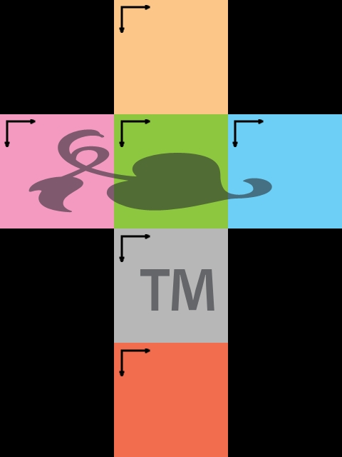</td>
		<td width="1">
		</td>
		<td width="445" bordercolor="#FFFFFF">
		<p align="center">
		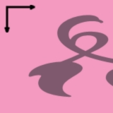
		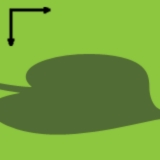
		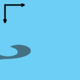<br>
		&nbsp;&nbsp;&nbsp; xp&nbsp;&nbsp;&nbsp;&nbsp;&nbsp;&nbsp;&nbsp;&nbsp;&nbsp;&nbsp; zp&nbsp;&nbsp;&nbsp;&nbsp;&nbsp;&nbsp;&nbsp;&nbsp;&nbsp;&nbsp;&nbsp; xn&nbsp;&nbsp;&nbsp;&nbsp;&nbsp;&nbsp; <br>
		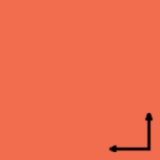
		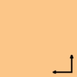
		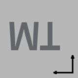<br>
		zn&nbsp;&nbsp;&nbsp;&nbsp;&nbsp;&nbsp;&nbsp;&nbsp;&nbsp;&nbsp; yp&nbsp;&nbsp;&nbsp;&nbsp;&nbsp;&nbsp;&nbsp;&nbsp;&nbsp;&nbsp;&nbsp; yn</td>
	</tr>
	<tr>
		<td width="826" bgcolor="#F7F7F7">
		　</td>
		<td width="43" bgcolor="#F7F7F7">
		　</td>
		<td width="741" bgcolor="#F7F7F7">
		　</td>
	</tr>
	<tr>
		<td width="1061">
		<p style="MARGIN-TOP: 9px; MARGIN-BOTTOM: 9px" align="center">
		<span lang="en-us"><font face="Verdana" style="font-size: 11pt">Output</font></span><font style="FONT-SIZE: 11pt" face="Verdana">: </font><b><font face="Verdana" style="font-size: 11pt">vertical 
		cross unicube map</font></b></td>
		<td width="1">
		</td>
		<td width="445">
		<p style="MARGIN-TOP: 9px; MARGIN-BOTTOM: 9px" align="center">
		<span lang="en-us"><font face="Verdana" style="font-size: 11pt">Output</font></span><font style="FONT-SIZE: 11pt" face="Verdana">: </font><b><font face="Verdana" style="font-size: 11pt">
		six-separate-face unicube map</font></b></td>
	</tr>
	<tr>
		<td width="1061"><font face="Courier New" style="font-size: 11pt">
		panotransform /it ppm 
		/if cv /ot ppm /of uv /s 160 /i cubemap</font></td>
		<td width="1"></td>
		<td width="445"><font face="Courier New" style="font-size: 11pt">panotransform /it 
		ppm /if cv /ot ppm /of u /s 160 /i cubemap</font></td>
	</tr>
	<tr>
		<td width="1061">
		<p align="center">
		</td>
		<td width="1">
		</td>
		<td width="445">
		<p align="center">
		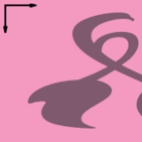
		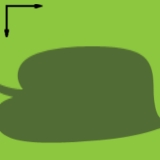
		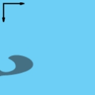<br>
		xp&nbsp;&nbsp;&nbsp;&nbsp;&nbsp;&nbsp;&nbsp;&nbsp;&nbsp;&nbsp; zp&nbsp;&nbsp;&nbsp;&nbsp;&nbsp;&nbsp;&nbsp;&nbsp;&nbsp;&nbsp;&nbsp; xn<br>
		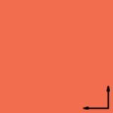
		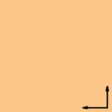
		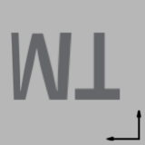<br>
		zn&nbsp;&nbsp;&nbsp;&nbsp;&nbsp;&nbsp;&nbsp;&nbsp;&nbsp;&nbsp; yp&nbsp;&nbsp;&nbsp;&nbsp;&nbsp;&nbsp;&nbsp;&nbsp;&nbsp;&nbsp;&nbsp; yn</td>
	</tr>
	<tr>
		<td width="1061" bgcolor="#F7F7F7">
		　</td>
		<td width="1" bgcolor="#F7F7F7">
		　</td>
		<td width="445" bgcolor="#F7F7F7">
		　</td>
	</tr>
	<tr>
		<td width="1061">
		<p style="MARGIN-TOP: 9px; MARGIN-BOTTOM: 9px" align="center">
		<span lang="en-us"><font face="Verdana" style="font-size: 11pt">Output</font></span><font style="FONT-SIZE: 11pt" face="Verdana">: </font><b><font face="Verdana" style="font-size: 11pt">vertical 
		cross isocube map</font></b></td>
		<td width="1">
		</td>
		<td width="445">
		<p style="MARGIN-TOP: 9px; MARGIN-BOTTOM: 9px" align="center">
		<span lang="en-us"><font face="Verdana" style="font-size: 11pt">Output</font></span><font style="FONT-SIZE: 11pt" face="Verdana">: </font><b><font face="Verdana" style="font-size: 11pt">
		six-separate-face isocube map</font></b></td>
	</tr>
	<tr>
		<td width="1061"><font face="Courier New" style="font-size: 11pt">
		panotransform /it ppm 
		/if cv /ot ppm /of iv /s 160 /i cubemap</font></td>
		<td width="1"></td>
		<td width="445"><font face="Courier New" style="font-size: 11pt">panotransform /it 
		ppm /if cv /ot ppm /of i /s 160 /i cubemap</font></td>
	</tr>
	<tr>
		<td width="1061" align="middle">
		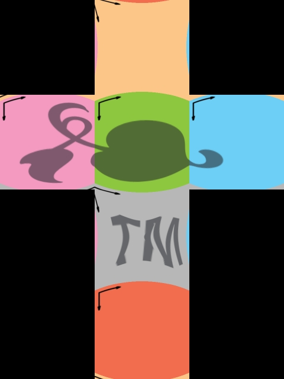</td>
		<td width="1" align="middle">
		</td>
		<td align="middle" width="445">
		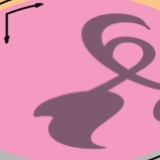
		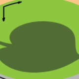
		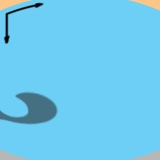<br>
		xp&nbsp;&nbsp;&nbsp;&nbsp;&nbsp;&nbsp;&nbsp;&nbsp;&nbsp;&nbsp; zp&nbsp;&nbsp;&nbsp;&nbsp;&nbsp;&nbsp;&nbsp;&nbsp;&nbsp;&nbsp;&nbsp; xn&nbsp; <br>
		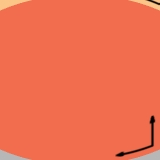
		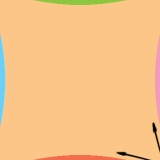
		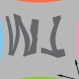<br>
		zn&nbsp;&nbsp;&nbsp;&nbsp;&nbsp;&nbsp;&nbsp;&nbsp;&nbsp;&nbsp; yp&nbsp;&nbsp;&nbsp;&nbsp;&nbsp;&nbsp;&nbsp;&nbsp;&nbsp;&nbsp;&nbsp; yn</td>
	</tr>
	<tr>
		<td width="1061" bgcolor="#F7F7F7">
		　</td>
		<td width="1" bgcolor="#F7F7F7">
		　</td>
		<td width="445" bgcolor="#F7F7F7">
		　</td>
	</tr>
	<tr>
		<td width="1061">
		<p style="MARGIN-TOP: 9px; MARGIN-BOTTOM: 9px" align="center">
		<span lang="en-us"><font face="Verdana" style="font-size: 11pt">Output</font></span><font style="FONT-SIZE: 11pt" face="Verdana">: </font><b><font face="Verdana" style="font-size: 11pt">fish-view 
		healpix map</font></b></td>
		<td width="1">
		</td>
		<td width="445">
		<p style="MARGIN-TOP: 9px; MARGIN-BOTTOM: 9px" align="center">
		<span lang="en-us"><font face="Verdana" style="font-size: 11pt">Output</font></span><font style="FONT-SIZE: 11pt" face="Verdana">: </font><b><font face="Verdana" style="font-size: 11pt">fish-view 
		RD-map</font></b></td>
	</tr>
	<tr>
		<td width="1061"><font face="Courier New" style="font-size: 11pt">
		panotransform /it ppm 
		/if cv /ot ppm /of h /s 114 /i cubemap</font></td>
		<td width="1"></td>
		<td width="445"><font face="Courier New" style="font-size: 11pt">
		panotransform /it /ppm /if cv /ot 
		ppm /of rd /s 114 /i cubemap</font></td>
	</tr>
	<tr>
		<td width="1061">
		<p align="center">
		</td>
		<td width="1">
		</td>
		<td width="445">
		<p align="center">
		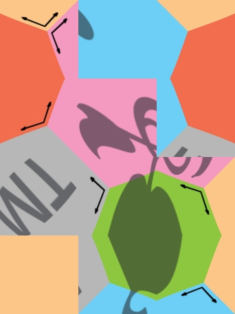</td>
	</tr>
	<tr>
		<td width="1061" align="middle" bgcolor="#C0C0C0">
		　</td>
		<td width="1" align="middle" bgcolor="#C0C0C0">
		　</td>
		<td align="middle" bgcolor="#C0C0C0" width="445">
		　</td>
	</tr>
	<tr>
		<td width="1061" align="middle">
		<p style="MARGIN-TOP: 9px; MARGIN-BOTTOM: 9px">
		<font face="Verdana" style="font-size: 11pt"><b><font color="#FF0000">
        <span lang="en-us">Input</span>:</font></b> </font><b>
		<font face="Verdana" style="font-size: 11pt">mirror ball</font></b></td>
		<td width="1" align="middle">
		</td>
		<td align="middle" width="445">
		<p style="MARGIN-TOP: 9px; MARGIN-BOTTOM: 9px">
		<span lang="en-us"><font face="Verdana" style="font-size: 11pt">Output</font></span><font style="FONT-SIZE: 11pt" face="Verdana">: </font><b><font face="Verdana" style="font-size: 11pt">
		longitude-latitude map</font></b></td>
	</tr>
	<tr>
		<td width="1061" align="middle"><font face="Verdana">
		<span style="font-size: 11pt">&quot;example_ball.ppm&quot;</span></font></td>
		<td width="1" align="middle"></td>
		<td align="middle" width="445">
		<p align="left"><font face="Courier New" style="font-size: 11pt">
		panotransform /it ppm /if b /ot ppm /of p /w 554 /h 277&nbsp;/i example_ball /x 180 /z 90</font></td>
	</tr>
	<tr>
		<td width="1061" align="middle">
		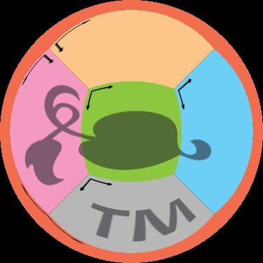</td>
		<td width="1" align="middle">
		</td>
		<td align="middle" width="445">
		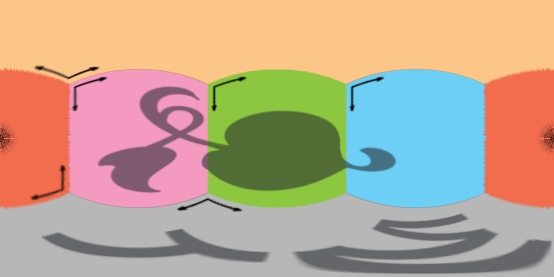</td>
	</tr>
	<tr>
		<td width="1061" align="middle" bgcolor="#C0C0C0">
		　</td>
		<td width="1" align="middle" bgcolor="#C0C0C0">
		　</td>
		<td align="middle" bgcolor="#C0C0C0" width="445">
		　</td>
	</tr>
	<tr>
		<td width="1061" align="middle">
		<p style="MARGIN-TOP: 9px; MARGIN-BOTTOM: 9px">
		<b><span lang="en-us">
        <font face="Verdana" style="font-size: 11pt" color="#FF0000">Input</font></span></b><font face="Verdana" style="font-size: 11pt"><b><font color="#FF0000">:</font></b> </font><b>
		<font face="Verdana" style="font-size: 11pt">mirror ball close-up</font></b></td>
		<td width="1" align="middle">
		</td>
		<td align="middle" width="445">
		<p style="MARGIN-TOP: 9px; MARGIN-BOTTOM: 9px">
		<span lang="en-us"><font face="Verdana" style="font-size: 11pt">Output</font></span><font style="FONT-SIZE: 11pt" face="Verdana">: </font><b><font face="Verdana" style="font-size: 11pt">
		longitude-latitude map</font></b></td>
	</tr>
	<tr>
		<td width="1061" align="middle"><font face="Verdana">
		<span style="font-size: 11pt">&quot;example_ball_closeup.ppm&quot;</span></font></td>
		<td width="1" align="middle"></td>
		<td align="middle" width="445">
		<p align="left"><font face="Courier New" style="font-size: 11pt">
		panotransform /it ppm /if m /ot ppm /of p /w 554 /h 277&nbsp;/i example_ball_closeup /x 180 /z 90</font></td>
	</tr>
	<tr>
		<td width="1061" align="middle">
		</td>
		<td width="1" align="middle">
		</td>
		<td align="middle" width="445">
		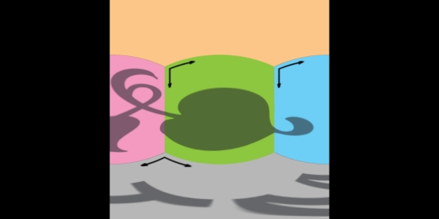</td>
	</tr>
	<tr>
		<td width="1061" align="middle" bgcolor="#C0C0C0">
		　</td>
		<td width="1" align="middle" bgcolor="#C0C0C0">
		　</td>
		<td align="middle" bgcolor="#C0C0C0" width="445">
		　</td>
	</tr>
	<tr>
		<td width="1061" align="middle">
		<p style="MARGIN-TOP: 9px; MARGIN-BOTTOM: 9px">
		<b><span lang="en-us">
        <font face="Verdana" style="font-size: 11pt" color="#FF0000">Input</font></span></b><font face="Verdana" style="font-size: 11pt"><b><font color="#FF0000">:</font></b> <b>light 
		probe</b></font></td>
		<td width="1" align="middle">
		</td>
		<td align="middle" width="445">
		<p style="MARGIN-TOP: 9px; MARGIN-BOTTOM: 9px">
		<span lang="en-us"><font face="Verdana" style="font-size: 11pt">Output</font></span><font style="FONT-SIZE: 11pt" face="Verdana">: </font><b><font face="Verdana" style="font-size: 11pt">
		longitude-latitude map</font></b></td>
	</tr>
	<tr>
		<td width="1061" align="middle"><font face="Verdana">
		<span style="font-size: 11pt">&quot;example_probe.ppm&quot;</span></font></td>
		<td width="1" align="middle"></td>
		<td align="middle" width="445">
		<p align="left"><font face="Courier New" style="font-size: 11pt">
		panotransform /it ppm /if r /ot ppm /of p /w 554 /h 277&nbsp;/i example_probe /x 180 /z 90</font></td>
	</tr>
	<tr>
		<td width="1061" align="middle">
		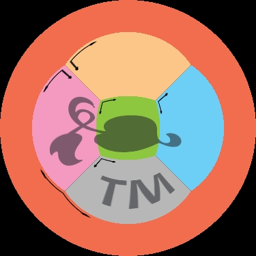</td>
		<td width="1" align="middle">
		</td>
		<td align="middle" width="445">
		</td>
	</tr>
</table>

  </center>
</div>

<p class=MsoNormal><span lang=EN-US style='font-family:"Times New Roman"'><o:p>&nbsp;</o:p></span></p>

<p class=MsoNormal>　</p>

<p class=MsoNormal><span style="font-family: Verdana; font-weight: 400">
<font size="5">Contact Person:</font></span></p>

<p class=MsoNormal><span style="font-size: 11pt">
<a href="/myself.html"><font face="Verdana">
Tien-Tsin Wong</font></a><font face="Verdana">
<a href="mailto:(ttwong@cse.cuhk.edu.hk">(ttwong@cse.cuhk.edu.hk</a>)</font></span></p>

<p class=MsoNormal><span style="font-size: 11pt"><font face="Verdana">The 
Chinese University of Hong Kong</font></span></p>

<p class=MsoNormal>　</p>

<p class=MsoNormal>　</p>

<div class=MsoNormal align=center style='text-align:center'><span lang=EN-US
style='font-family:"Times New Roman"'>

<hr size=3 width="100%" align=center>

</span></div>

</div>

</blockquote>

</div>

</body>

</html>